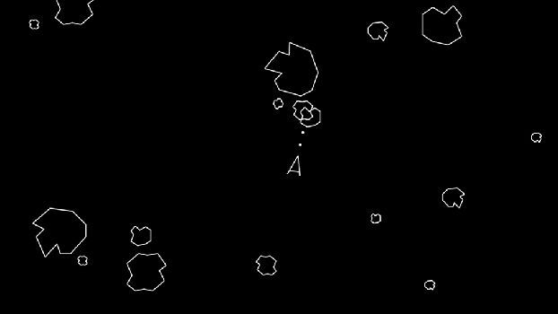
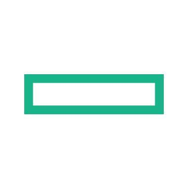

"Born on February 9, 1991"
"Started elementary school"
1997
"Started high school"
2003

"Started interest in Flash"
2004

"Successfully recreated Asteroid game"
2004
"Started college - BS IS"
2007

"Started doing freelance work"
2007
"Started internship with OHSI"
2011
"Finished Thesis on SCM with DMCI"
2014

"Started work at HPE"